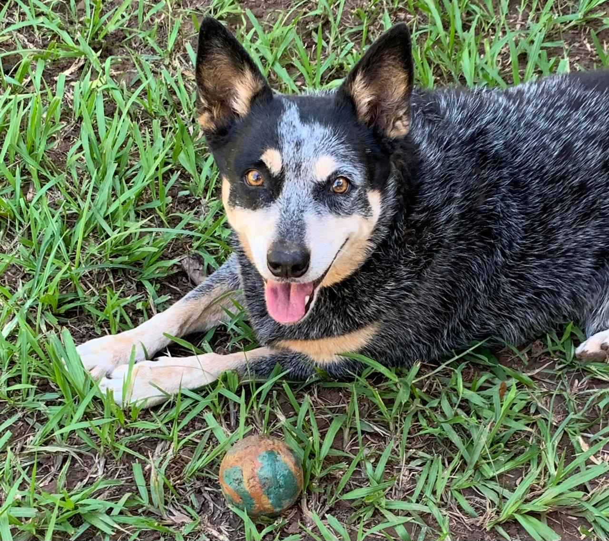
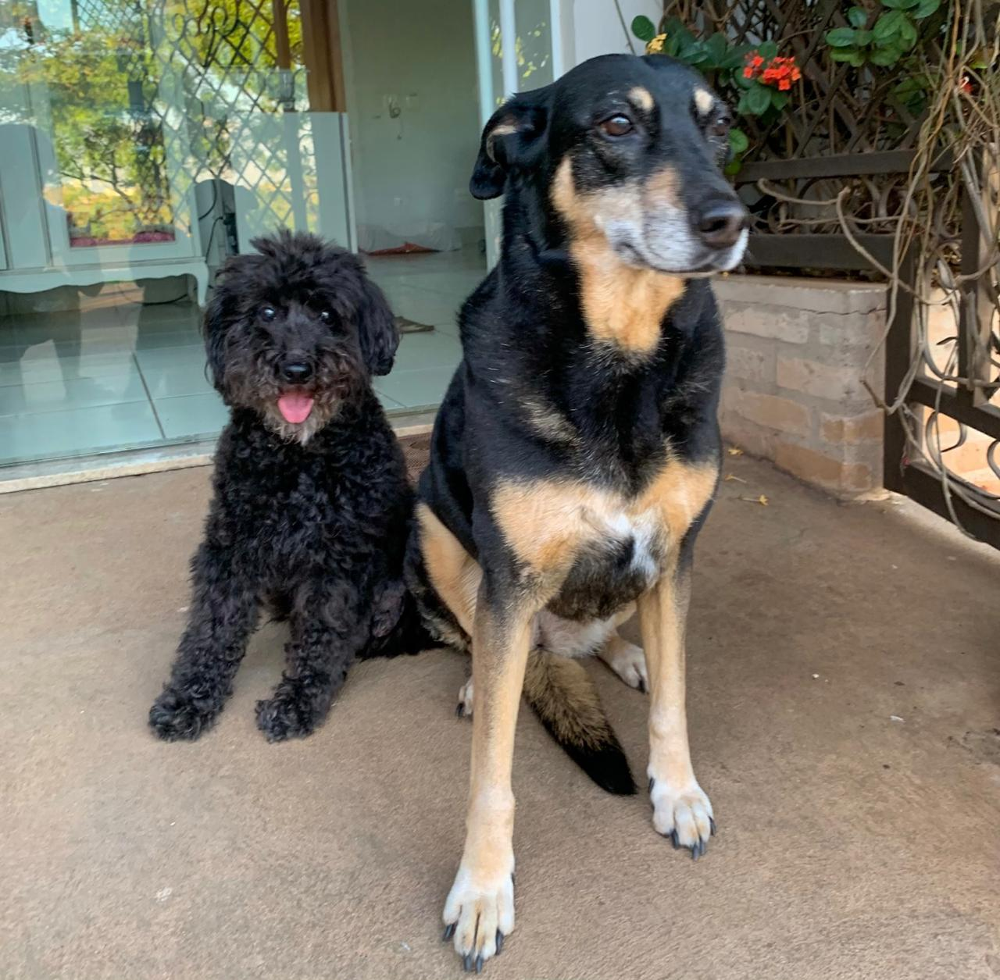
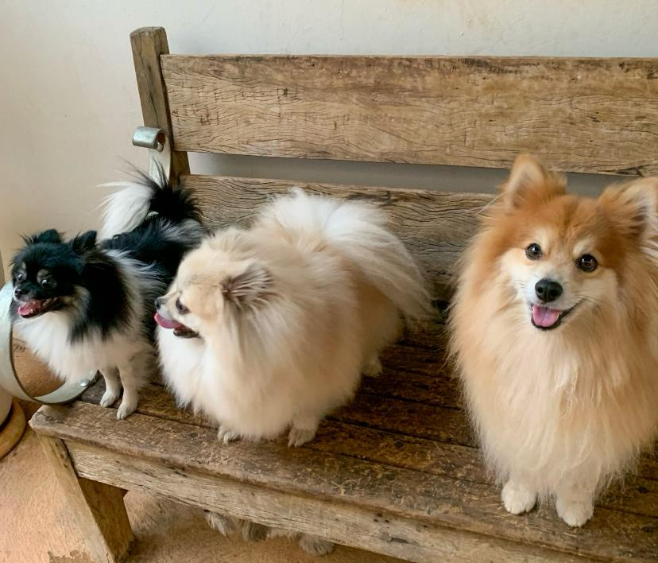
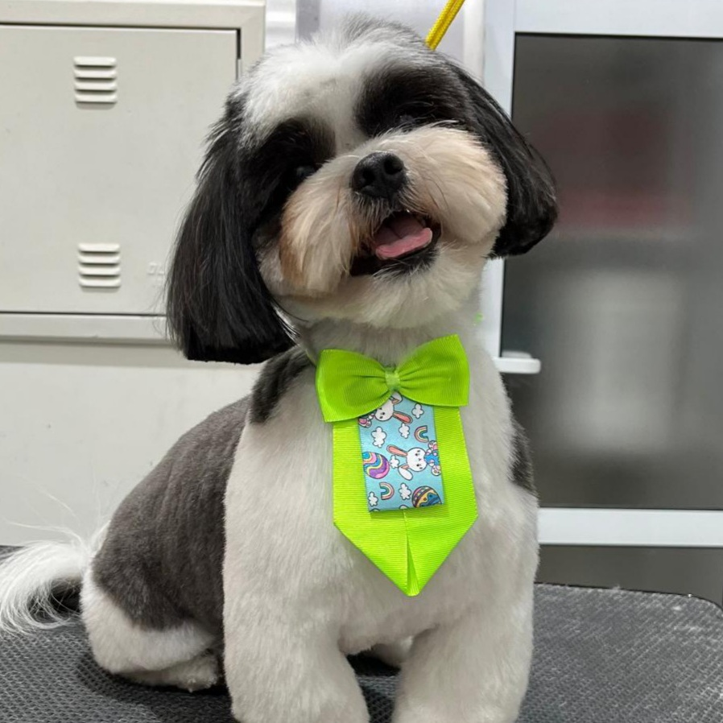
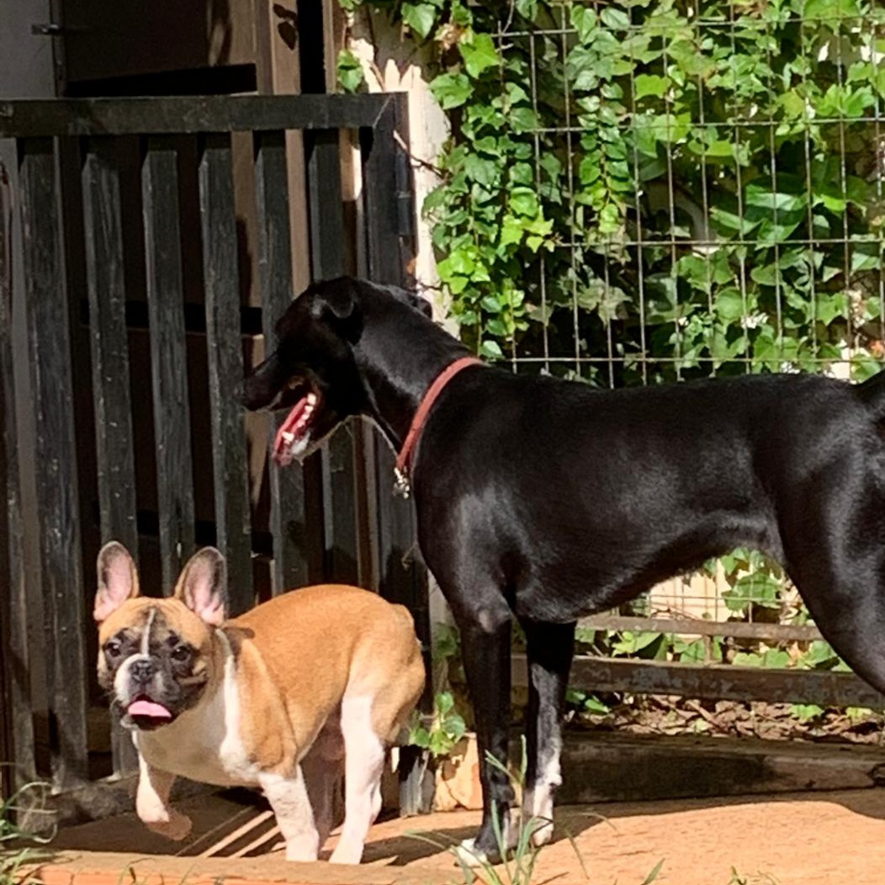
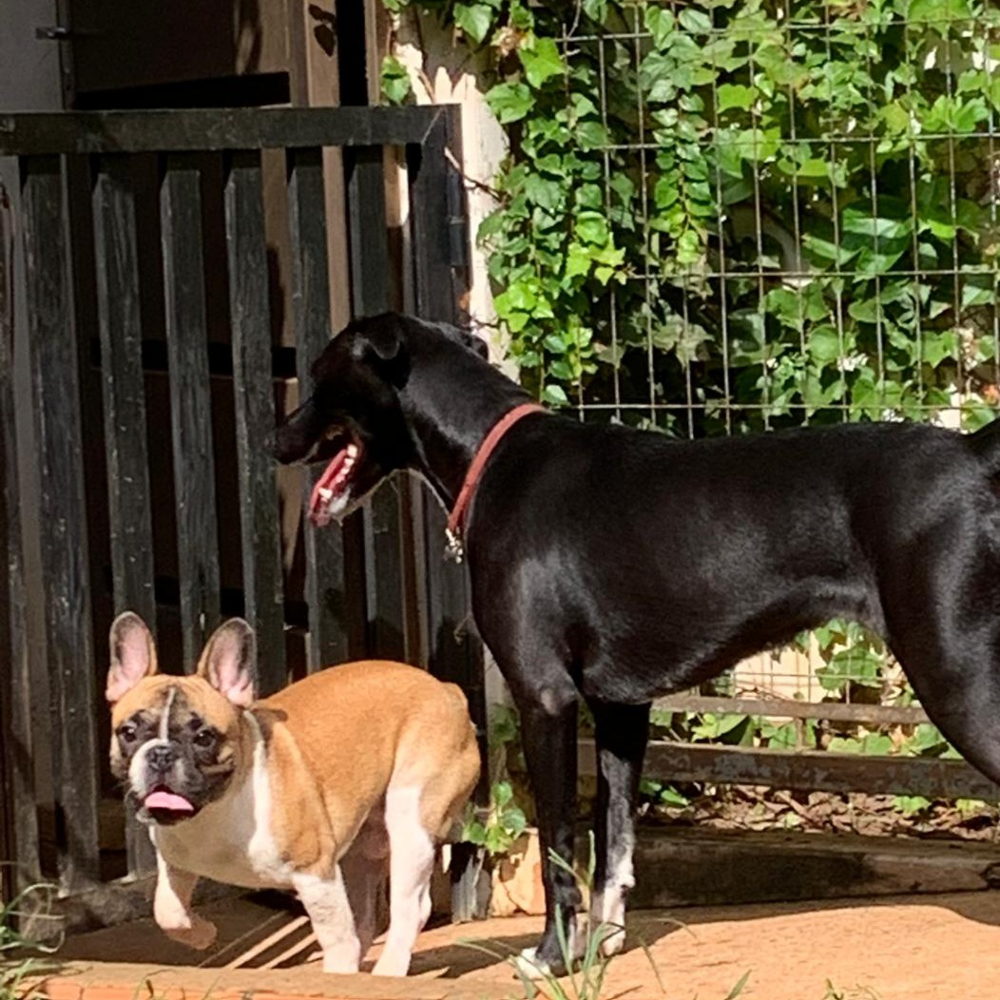
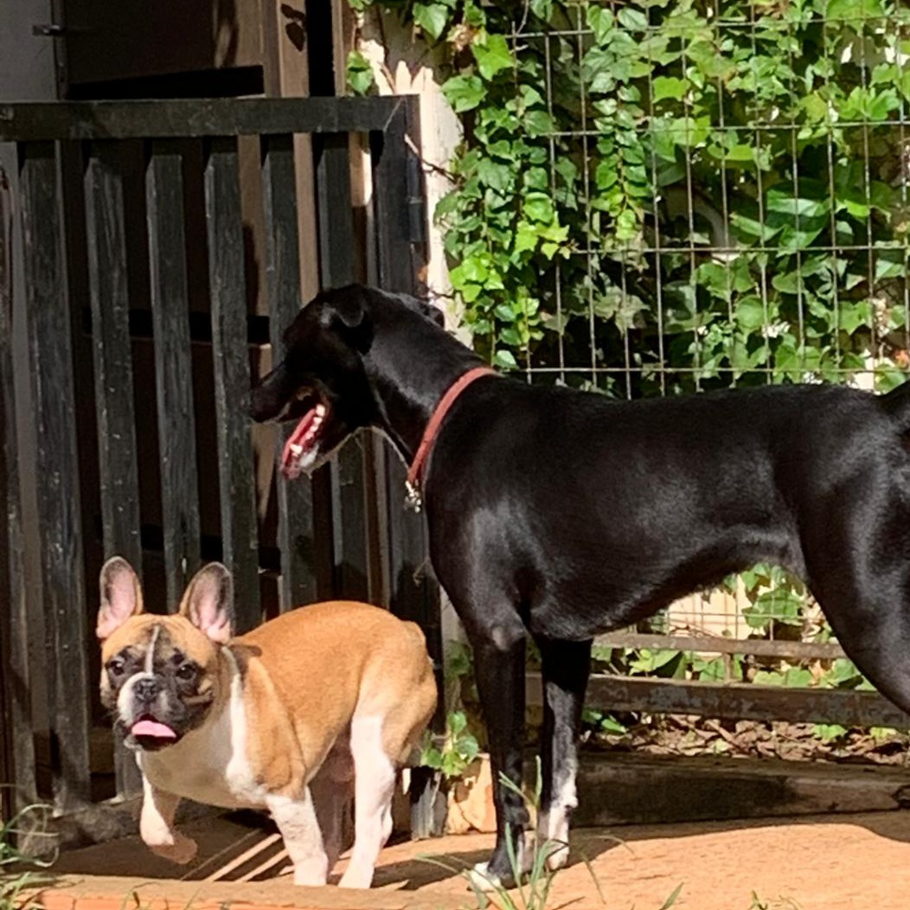
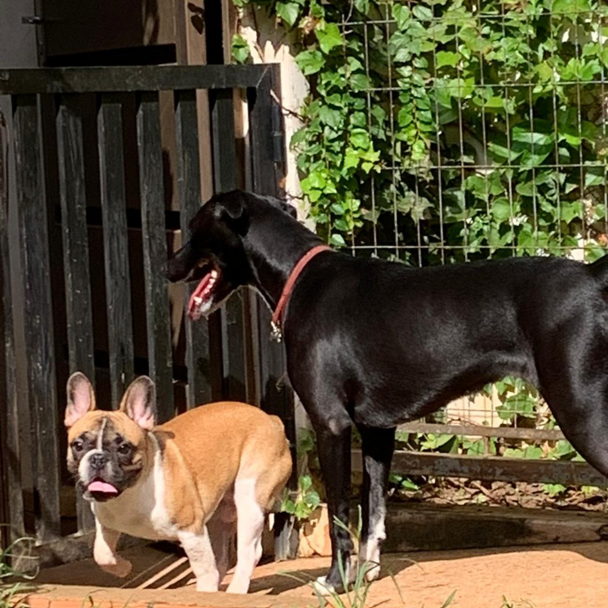

Amamos os nossos clientes




 


O Serendipity encantando animais nasceu no ano de 2011 a partir do sonho da proprietária e médica-veterinária em conciliar a sua paixão à sua profissão. O conceito era ter um espaço onde os cães pudessem ficar soltos, interagindo entre eles e, principalmente, se sentirem em casa. Dessa forma, transmitir confiança e conforto aos tutores.
Saiba mais

O que mais me encantou foi o fato da dona entender o comportamento de cada peludo. Nunca imaginei que o meu cãozinho iria fazer amigos por ele ser mais bravo. Antes de encontrar você liguei para vários pets, e todos deixavam os cachorros o dia todo presos na baia. Fiquei morrendo de dó.
O que mais me encantou foi o fato da dona entender o comportamento de cada peludo. Nunca imaginei que o meu cãozinho iria fazer amigos por ele ser mais bravo. Antes de encontrar você liguei para vários pets, e todos deixavam os cachorros o dia todo presos na baia. Fiquei morrendo de dó.
O que mais me encantou foi o fato da dona entender o comportamento de cada peludo. Nunca imaginei que o meu cãozinho iria fazer amigos por ele ser mais bravo. Antes de encontrar você liguei para vários pets, e todos deixavam os cachorros o dia todo presos na baia. Fiquei morrendo de dó.